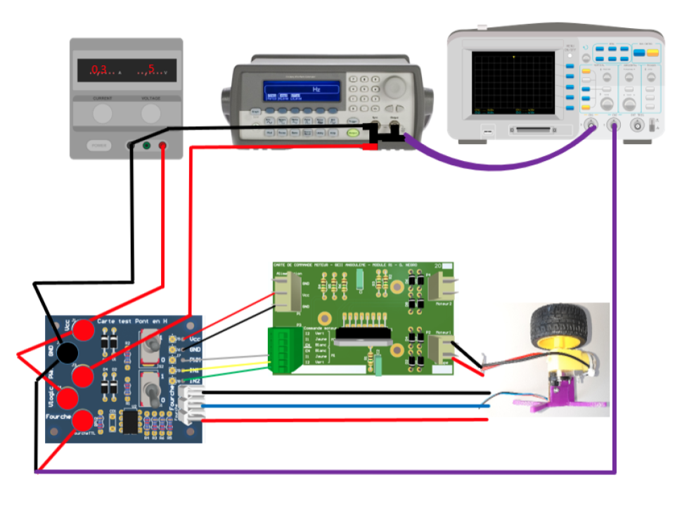
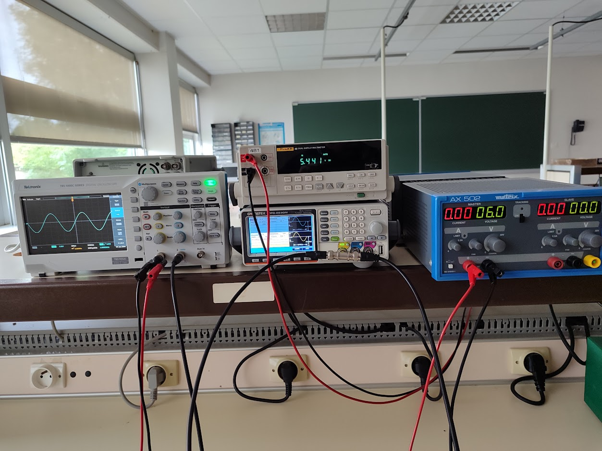
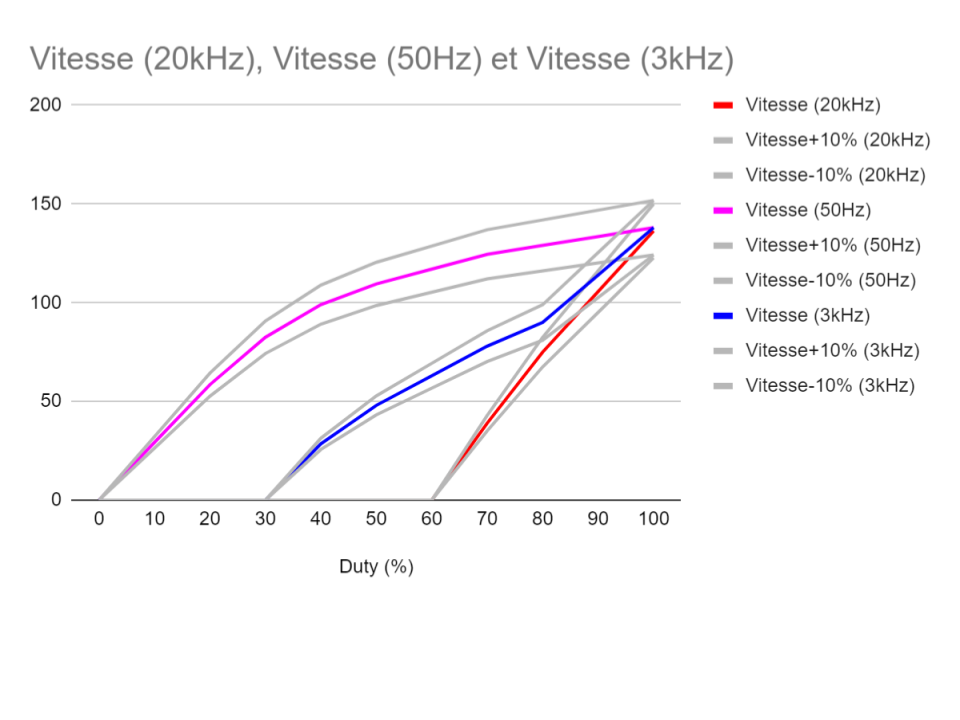
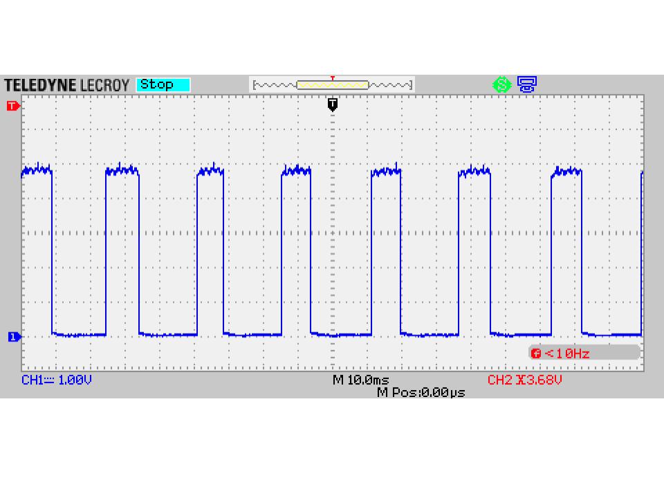

Ce projet, qui a été notre première SAE dans le cadre de cette année, impliquait la réalisation de quatre tests sur une carte moteur. Il avait également pour but de nous enseigner l'utilisation des différents équipements disponibles à l'IUT, tels que le générateur basse fréquence, l'oscilloscope et l'alimentation stabilisée, entre autres.
Enfin, cette SAE avait pour but de comparer la conformité de la carte moteur du fabricant avec les données fournies dans le document constructeur.
Pour réalisé cette SAE, deux documents nous on été fournies, le sujet et la datasheet de la carte moteur.
| Tâche à réaliser | Ressources utilisées | Traces | Autoévaluation |
|---|---|---|---|
| Familiarisation avec l'utilisation des équipements L'objectif de cette étape commune à tous les tests est de se familiariser avec l'utilisation des équipements et de comprendre comment ils seront branchés entre eux. Cela permettra de s'assurer que les tests seront effectués correctement et que les résultats seront fiables. |
Pédagogique : Cours TP (M.Ribero) et cours de SI du lycée | Non renseignée | 10/10
J'ai très facilement pris en main les appareils, car j'ai eu l'occasion de les utiliser dans le passé. |
| Réaliser un plan de câblage Cette étape permet de visualiser la manière dont les appareils seront connectés les uns aux autres, cette étape commune à tous les tests est nécessaire. |
Logiciel : Google Drawing
Documentation : Photos des équipements disponibles |
 |
10/10
Le plan de câblage ne m'a pas posé de problème à réaliser, car j'avais bien compris le fonctionnement de la carte. |
| Réaliser le réglage des appareils et le câblage Cette étape vise à régler et câbler les appareils pour qu'ils fonctionnent correctement et soient prêts pour les tests. Cela permet de détecter et résoudre les problèmes techniques, d'éviter les retards et les erreurs, et de garantir la fiabilité et la précision des résultats. |
Pédagogique : Cours TP (M.Ribero) |
 |
10/10
Réglés, les appareils correctement ne m'ont pas posé de problème. |
| Test 1/4 : Vérification de la conformité de la carte
La vérification de la conformité de la carte assure que l'interface valide la table de vérité de commande de sens de rotation, la commande de vitesse par signal PWM et la mesure du signal de vitesse, et vérifie l'état du moteur en testant une voie de la carte moteur. |
Matériels : carte pont en H, alimentation stabilisée, câbles(banane-banane/BNC-banane/BNC), Générateur basses fréquences, oscilloscope, carte moteur
Pédagogique : Cours d'électronique Documentation : Sujet de la SAE |
 |
10/10
Ce test fut le premier et il était très guidé, je n'eus aucun problème à suivre les indications données. |
| Test 2 : Vérfication des valeurs de saturation et de consommation du moteur
Ce test vérifie les valeurs de saturation et de consommation du moteur en mesurant les consommations à vide et avec un rapport cyclique de 100% et le moteur bloqué, qui ne doivent pas dépasser les valeurs typiques, ainsi que les tensions à l'entrée du moteur avec un rapport cyclique de 100% et le moteur bloqué pour vérifier les tensions de saturation typiques. |
Matériels : carte pont en H, alimentation stabilisée, câbles(banane-banane/BNC-banane/BNC), Générateur basses fréquences, oscilloscope, carte moteur
Pédagogique : Cours d'électronique Documentation : Sujet de la SAE |
 |
8/10
Ce test 2, fut pour moi le plus intéressant et ne m'a pas posé de problème particulier mis à part la compréhension des signaux qui fut compliqué au début. |
| Test 3 : Vérfication des temps typiques de montée, descente et délais des différentes commutations Ce test vérifie les temps typiques de montée, descente et délais des commutations en mesurant les tensions de sortie pour valider les valeurs T1(Ven) et T3(Ven) données dans la spécification. |
Matériels : carte pont en H, alimentation stabilisée, câbles(banane-banane/BNC-banane/BNC), Générateur basses fréquences, oscilloscope, carte moteur
Pédagogique : Cours d'électronique Documentation : Sujet de la SAE |

|
8/10
Ce test 3, fut pour moi moins intéressant, car j'ai eu du mal à comprendre l'intérêt de ce test avant une explication du professeur. |
| Réalisation des comptes rendus Cette étape finale de la SAE est importante, car elle permet de retranscrire les mesures et les manipulations réalisées sur un document pouvant être utilisable ultérieurement. |
Pédagogique : Cours de SI au lycée
Logiciel : Word |
10/10
Les comptes-rendus ne m'ont posé aucun problème, car j'en avais déjà réalisé beaucoup avant cette SAE. |
|
| ANALYSE PERSONNELLE | |||
| Cette première SAE a été importante pour moi. Chacun des tests que j'ai pu réaliser m'a permis de revoir et de renforcer mes connaissances en ce qui concerne les appareils de mesure disponible à l'IUT, mais aussi, elle m'a permis de mieux comprendre comment on contrôle un moteur à l'aide d'une carte moteur. De plus, il ne m'était pas venu à l'esprit avant cette SAE de vérifier les informations données dans la fiche constructeur, car comme j'ai pu le constater, des défauts de fabrication peuvent impacter la qualité de la carte moteur.
Personnellement, cette SAE a été bien réussie même si j'ai eu du mal à comprendre l'intérêt de la SAE au début. Cependant cette incompréhension c'est dissipé plus la SAE avançait. | |||